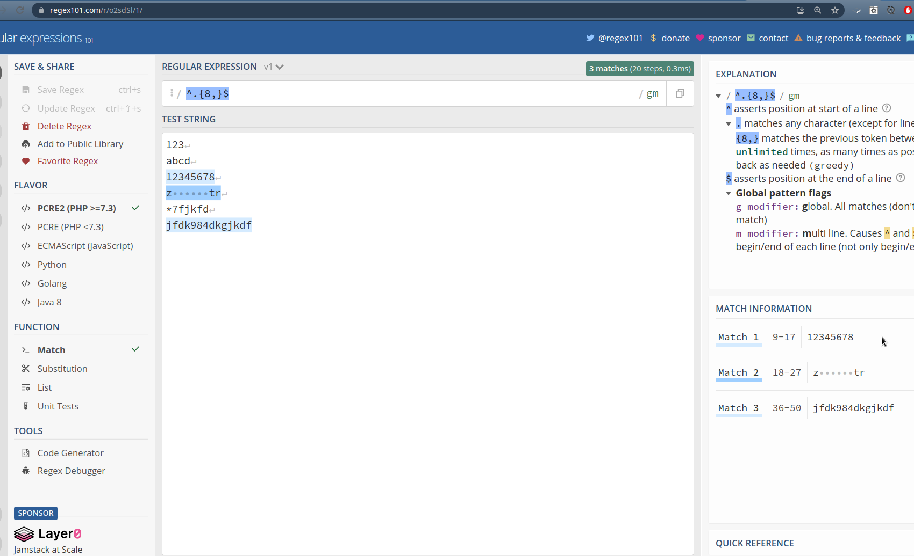

Keyboard shortcuts:
N/СпейсNext Slide
PPrevious Slide
OSlides Overview
ctrl+left clickZoom Element
If you want print version => add '
?print-pdf' at the end of slides URL (remove '#' fragment) and then print.
Like: https://wwwcourses.github.io/...CourseIntro.html?print-pdf
Created for

Iva E. Popova, 2022-2023,

What are Regular Expressions?
Intro
- Regular Expression is a string pattern, which can match or not other stings
- You can think of it a as a kind of search mechanism.
- Regular Expression synonyms:
- Regex, RegEx, RegExp
Example @regex101.com
An example of regex, matching strings with at leas 8 symbols, at the regex101.com tool:
the language
- You can think of Regular Expressions as a separate language, with its own rules and specs.
- In fact, the Regular Expressions are coming from the regular language defined by Kleene in the early 1950s
- Nowadays, almost all programming languages implements the concept of Regex.
The Language
- You can think of Regular Expressions as a separate language, with its own rules and specs.
- In fact, the Regular Expressions are coming from the regular language defined by Kleene in the early 1950s
- Nowadays, almost all programming languages implements the concept of Regex.
Regex example in Python
import re
user_pass = "qazwsxedc";
#the RegEx to find if the user_pass contains at least 8 symbols:
pattern = r"^.{8,}$";
# do the test:
match = re.search(pattern,user_pass)
if match:
print("Match")
else:
print("No match!")
- A regex grammar includes 2 types of symbols:
- Regular symbols: they are matched literally on the matching string
- Meta-characters: they have special meaning and gives the power of regex
- All characters which are not metacharacters are matched literally.
. ^ $ * + ? { } [ ] \ | ( )
metacharacters - example
import re
phone_numbers = ['+359 88 7123 456', '+359 88 7123456' ]
# match numbers with format: +359 YY YXXX XXX
regex = r'\+359\s\d{2}\s\d{4}\s\d{3}'
for number in phone_numners:
if re.match(regex,number):
print("{} is a valid number format".format(number))
else:
print("{} is NOT IN A VALID FORMAT".format(number))
+359 88 7123 456 is a valid number format
+359 88 7123456 is NOT IN A VALID FORMAT
Using regexes in Python - the re module
Using regexes in Python - the re module
Overview
- The built-in
remodule in Python provides regular expression matching operations similar to those found in Perl. - Regular expressions are compiled into Regular Expression Object, which have methods for various operations such as searching for pattern matches or performing string substitutions.
- Regular expressions in Python are handled as strings because regular expressions aren’t part of the core Python language, and no special syntax was created for expressing them.
How to write regex
- Regex in Python are written as string, which can be passed to re.compile() method or directly to other matching methods, like re.search(), re.match(). These topics will be discussed deeply later in the course.
- We can use any string literals to write our regex, including the row string syntax.
Matching backslash
- The raw string syntax is most concise when we need to write a backslash in a regex.
- The raw string @docs:
- When an 'r' or 'R' prefix is present, a character following a backslash is included in the string without change, and all backslashes are left in the string.
- A raw string cannot end in a single backslash
# note that backslash in raw string is not escape sequence
print(r'\\') # \\
print('\\') # \
print(r'\') # SyntaxError
Matching backslash
import re
test_string = '\\stop'
patterns = [
'\\stop',
'\\\\stop',
r'\\stop'
]
for pattern in patterns:
if re.match(pattern, test_string):
print(f"Pattern /{pattern}/ MATCHED string {test_string}!")
else:
print(f"Pattern /{pattern}/ DID NOT MATCHED string {test_string}!")
Pattern /\stop/ DID NOT MATCHED string \stop!
Pattern /\\stop/ MATCHED string \stop!
Pattern /\\stop/ MATCHED string \stop!
Regex Syntax
Regex Syntax
The Grammar
- A regex grammar includes 2 types of symbols:
- Regular symbols: they are matched literally on the matching string
- Meta-characters: they have special meaning and gives the power of regex
Special Characters
Only next characters has special meaning in Regex:
^ $ \ . * + ? ( ) [ ] { } |
They can be combined with ordinary characters to change their meaning too
If we want to match literally a special character we have to escape it with backslash '\'
Matching Special Characters - example
import re
text = "try to match: 2+3"
rx = re.compile('2\+3')
res = rx.search(text)
if res:
print( res.group())
Quantifiers
Quantifiers
Overview
| Quantifier | Description |
|---|---|
| r * | r match 0 or more times |
| r + | r match 1 or more times |
| r ? | r match 0 or 1time |
| r {n} | r match exactly n times |
| r {n,m} | r match between n and m times (n, m are positive) |
r can be any regex!
Quantifiers (greedy and non-greedy match)
- The quantifiers are greedy, meaning they will match the maximum part of the string they can:
matched = re.search(r'a.*a','ala bala' );
print(matched)
# match='ala bala', but not 'ala'
Quantifiers (greedy and non-greedy match)
- We can make them non-greedy, if we suffix them with '
?'
matched = re.search(r'a.*?a','ala bala' );
print(matched)
#match='ala'
'*'quantifier - example
import re
string = 'ala bala'
matched = re.findall(r'a.*a',string ) # greedy
print(matched)
#OUTPUT: ['ala bala']
matched = re.findall(r'a.*?a',string ) # non-greedy
print(matched)
#OUTPUT: ['ala', 'ala']
matched = re.findall(r'.*?',string ) # non-gready
print(matched)
#OUTPUT: ['', '', '', '', '', '', '', '', ''
{n,m} quantifier - example
import re
matched = re.findall(r'\d{2,4}','123456789' ) # gready
print(matched)
# OUTPUT: ['1234', '5678']
matched = re.findall(r'\d{2,4}?','123456789' ) # non-gready
print(matched)
#OUTPUT: ['12', '34', '56', '78']
Character Sets
Character Sets
Overview
- The square brackets are used to define a character set. Like:
[abc](will match 'a' or 'b' or 'c'). - The character set itself match only one symbol!
- Symbols inside brackets are the elements of set.
- Special characters lose their special meaning inside sets
- The hyphen (
-), when it is between 2 symbols, has special meaning inside the character class - it defines a range. Like:[0-9]. If it is in the end, it is considered as a hyphen.
Character Sets Description
| Character set | Description |
|---|---|
[abc] | Match any one of the symbols listed ('a' or 'b' or 'c') |
[a-z] | Match any symbol, from 'a' till 'z' (i.e. any lower Latin letter) |
[^abc] | Match any symbol, except 'a or 'b' or 'c' (i.e. the ^ negates the characters in the set) |
Character Sets examples
import re
# match any one of the vocals
matched = re.findall(r'[aeiouy]','astroid' );
print(matched)
#OUTPUT: ['a', 'o', 'i']
# match any consecutive vocals - one or more times
matched = re.findall(r'[aeiouy]+','astroid' );
print(matched)
#OUTPUT: ['a', 'oi']
# match bg mobile phone numbers
matched = re.findall('\+3598[7-9][0-9]{7}', '+359888123456');
print(matched)
#OUTPUT: ['+359888123456']
# match digit or hyphen:
matched = re.findall('[1-5-]', '12-34');
print(matched)
#OUTPUT: ['1', '2', '-', '3', '4']
Character Sets Negation - examples
import re
# match any non-vocal:
matched = re.findall(r'[^aeiouy]','astroid' );
print(matched)
#OUTPUT: ['s', 't', 'r', 'd']
Resources
Resources
Video
Reg(exp){2}lained/: Demystifying Regular Expressions by Lea Verou
Online Regex Testers and Cheet-sheet
regex Excersises
- regex101 regex quiz
- regexone.com - Learn Regular Expressions with simple, interactive exercises.